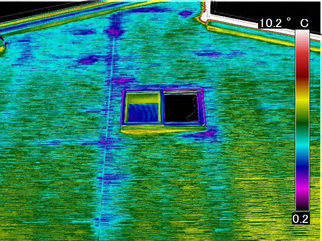

町田・青葉区で赤外線カメラ雨漏り診断｜無料調査の流れと即日対応
公開日：2026年2月25日
町田市・横浜青葉区・麻生区で赤外線カメラでの雨漏り診断を無料実施。調査の流れ、準備すること、対応エリアを地域密着の専門業者が詳しく解説。

地域密着・赤外線カメラで無料診断
町田・青葉区・麻生区限定の無料サービス
- 赤外線カメラでの雨漏り診断が完全無料
- 最短1時間で駆けつけ、即日調査可能
- LINE・電話で24時間受付、相談無料
- 地域実績350件以上の信頼と実績
町田市や横浜青葉区を中心に、地域密着で雨漏り修理を行っています。赤外線カメラでの無料診断から修理、アフターフォローまで、地域のお客様に安心してご利用いただけるサービスを提供しています。
対応エリア詳細
主要対応エリア
-
町田市全域
原町田、鶴川、玉川学園、成瀬、小山町、南大谷、金井町、相原町、小野路町、図師町、忠生、山崎町、本町田、三輪町、野津田町、真光寺町、広袴町、小山ヶ丘、つくし野、高ヶ坂、木曽東、木曽西、金森、金森東、南成瀬、南つくし野、東玉川学園、西成瀬
-
横浜市青葉区全域
あざみ野、美しが丘、荏田北、荏田西、荏田町、市ヶ尾町、青葉台、桂台、恩田町、田奈町、鴨志田町、さつきが丘、みたけ台、もえぎ野、新石川、すすき野、たちばな台、つつじが丘、奈良町、藤が丘、松風台、みすずが丘、もみの木台、元石川町、若草台
-
川崎市麻生区全域
麻生、上麻生、王禅寺、王禅寺西、王禅寺東、片平、金程、栗木、栗木台、栗平、黒川、五力田、下麻生、白鳥、高石、多摩美、千代ヶ丘、百合丘、東百合丘、細山、万福寺、南黒川、虹ヶ丘、早野、はるひ野
即日対応可能エリア
-
稲城市
矢野口、東長沼、大丸、百村、坂浜、若葉台、平尾、押立
-
多摩市
唐木田、鶴牧、豊ヶ丘、落合、永山、貝取、聖ヶ丘
-
日野市
百草、三沢、南平、程久保、万願寺、高幡
-
相模原市
南区（相模大野、相模台、東林間、上鶴間、麻溝台、相武台、新磯野）
-
横浜市緑区
長津田、長津田町、十日市場町、いぶき野
⚡ 即日対応の目安
主要対応エリア（町田・青葉区・麻生区）は、最短1時間で駆けつけます。その他のエリアも、当日中〜翌日には調査可能です。
※混雑状況により、お時間をいただく場合がございます。まずはLINE・電話でお問い合わせください。
赤外線カメラ無料診断の流れ
お問い合わせ（LINE・電話）
LINEまたは電話で、雨漏りの症状をお聞かせください。24時間受付しています。
お聞きする内容：
- 雨漏りの症状（雨染み、ポタポタ、カビなど）
- 雨漏りの場所（1階・2階、部屋名）
- 雨漏りが発生するタイミング（大雨・台風など）
- 建物の築年数・構造（木造・鉄骨など）
- ご住所（対応エリアの確認）
日程調整・訪問予約
ご都合の良い日時を調整します。最短で即日訪問も可能です。
訪問時間の目安：
- 平日 9:00〜18:00（ご希望の時間帯を指定できます）
- 土日祝 9:00〜17:00（土日祝日も対応可能です）
- 緊急 雨漏りが激しい場合、時間外でも対応します（要相談）
現地訪問・赤外線カメラ診断
専門スタッフが訪問し、赤外線カメラで詳しく調査します（30分〜1時間程度）。
調査内容：
- 室内調査：雨染み・カビの範囲を赤外線カメラで確認
- 屋根調査：瓦・棟・谷樋などを目視＋赤外線で確認
- 外壁調査：クラック・シーリングの劣化を確認
- ベランダ調査：防水層の劣化を赤外線で確認
- 天井裏調査：可能な範囲で天井裏の状態を確認
💡 持参する機材
赤外線カメラ、ドローン（必要に応じて）、梯子、安全装備、デジタルカメラ、水平器、メジャー
診断結果のご説明
赤外線画像をお見せしながら、雨漏りの原因と修理方法を丁寧にご説明します。
ご説明する内容：
- 雨漏りの原因箇所（赤外線画像で可視化）
- 水の侵入経路・浸水範囲
- 修理が必要な箇所・範囲
- 二次被害（腐食・カビ）の有無
- 放置した場合のリスク
お見積もり提示
修理内容と費用を明確にご提示します。無理な営業は一切いたしません。
見積もり内容：
- 修理内容の詳細（材料・工法）
- 修理費用（材料費・工賃・諸経費）
- 工期・スケジュール
- 保証内容（10年〜25年保証）
- 火災保険の適用可否
✅ ご契約は任意です
診断・見積もりだけで修理されなくても全く問題ありません。他社と比較検討していただいて構いません。
調査当日の準備・注意事項
準備していただくこと
- 特別な準備は不要です（普段通りで大丈夫）
- 雨漏り箇所の周辺を片付ける必要はありません
- 立ち会いは5〜10分程度で構いません
- お留守の場合も調査可能（要相談）
あると助かるもの
- 雨漏り箇所の写真（あれば）
- 建物の図面・設計図（あれば）
- 過去の修理履歴（あれば）
- 火災保険の証券（保険適用をご希望の場合）
駐車スペースについて
- 可能であれば駐車スペース1台分
- 駐車場がない場合は近隣のコインパーキングを利用
- 路上駐車は行いません（ご近所への配慮）
調査時間について
- 調査：30分〜1時間
- 診断結果説明：15〜30分
- 見積もり提示：10〜20分
- 合計：1時間〜1時間半
地域密着だからできること
町田・青葉区で選ばれる5つの理由
1 最短1時間で駆けつけ
地域密着だから、緊急時も素早く対応できます。大雨の日も即日訪問可能です。
2 地域実績350件以上
町田・青葉区・麻生区で350件以上の施工実績。ご近所での施工事例も多数あります。
3 アフターフォローも安心
修理後も近くにいるから、万が一のトラブルにもすぐ対応できます。
4 地域の気候に精通
多摩川沿い、丘陵地など、地域特有の雨漏り原因を熟知しています。
5 ご近所への配慮
住宅密集地も多いため、騒音・駐車など、ご近所への配慮を徹底しています。
お客様の声（町田・青葉区・麻生区）
「町田市でLINEから相談したら、2時間後には来てくれました。赤外線カメラで原因が一発で分かり、翌日には修理完了。地元の業者さんで本当に良かったです。」
町田市鶴川 Nさま（築28年・戸建て）
「青葉区あざみ野で雨漏りが発生。他社は1週間後しか来られないと言われましたが、こちらは当日に来てくれて、赤外線カメラで詳しく調査してくれました。」
横浜市青葉区 Tさま（築35年・戸建て）
「麻生区で3社に見てもらっても原因が分からず困っていました。赤外線カメラで調査してもらったら、壁の中の水の流れが一目瞭然。さすが地元で評判の業者さんでした。」
川崎市麻生区 Mさま（築22年・戸建て）
よくある質問
対応エリア外からの依頼も可能ですか？
対応可能な場合もあります。まずはLINE・電話でご相談ください。エリア外の場合、出張費をいただく場合がございます。
土日祝日も対応していますか？
はい、土日祝日も対応しています。平日お仕事で都合がつかない方も、お気軽にご相談ください。
本当に無料ですか？後から請求されませんか？
完全無料です。診断後に修理を依頼されなくても、診断費用・出張費・キャンセル料などは一切いただきません。
※ただし、町田・青葉区・麻生区・稲城市・日野市以外の遠方地域は、出張費をいただく場合があります。
雨の日でも調査に来てもらえますか？
はい、雨の日でも調査可能です。むしろ、雨が降っている時や直後の方が、雨漏り箇所を特定しやすいです。
※ただし、屋根の調査は安全のため、雨が止んでから実施する場合があります。
火災保険は使えますか？
台風・突風・雪・雹（ひょう）などの自然災害による雨漏りは、火災保険が適用される可能性が高いです。
当社では、火災保険の申請サポートも無料で行っています。保険証券をご用意いただければ、適用可否を診断いたします。
まとめ：町田・青葉区で赤外線カメラ無料診断
対応エリア：町田市・横浜青葉区・麻生区・稲城市・日野市（即日対応可能）
完全無料：赤外線カメラ診断・見積もり・出張費すべて無料
最短1時間：お問い合わせから最短1時間で駆けつけます
地域実績350件：町田・青葉区・麻生区で多数の施工実績
24時間受付：LINE・電話でいつでも相談できます
雨漏りでお困りの方は、まずは無料診断をご利用ください。赤外線カメラで正確に原因を特定し、最適な修理方法をご提案します。
赤外線カメラでの無料診断・お見積り
町田市・横浜青葉区・麻生区・稲城市・日野市
最短1時間で駆けつけます
平日 9:00〜18:00 / 土日祝日も対応可 / 24時間受付